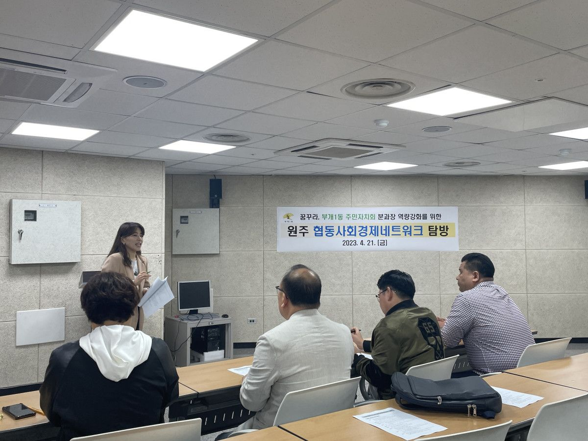
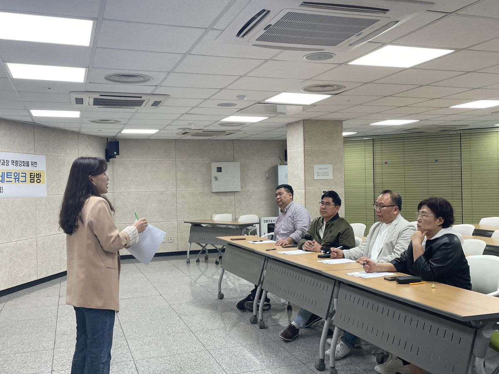
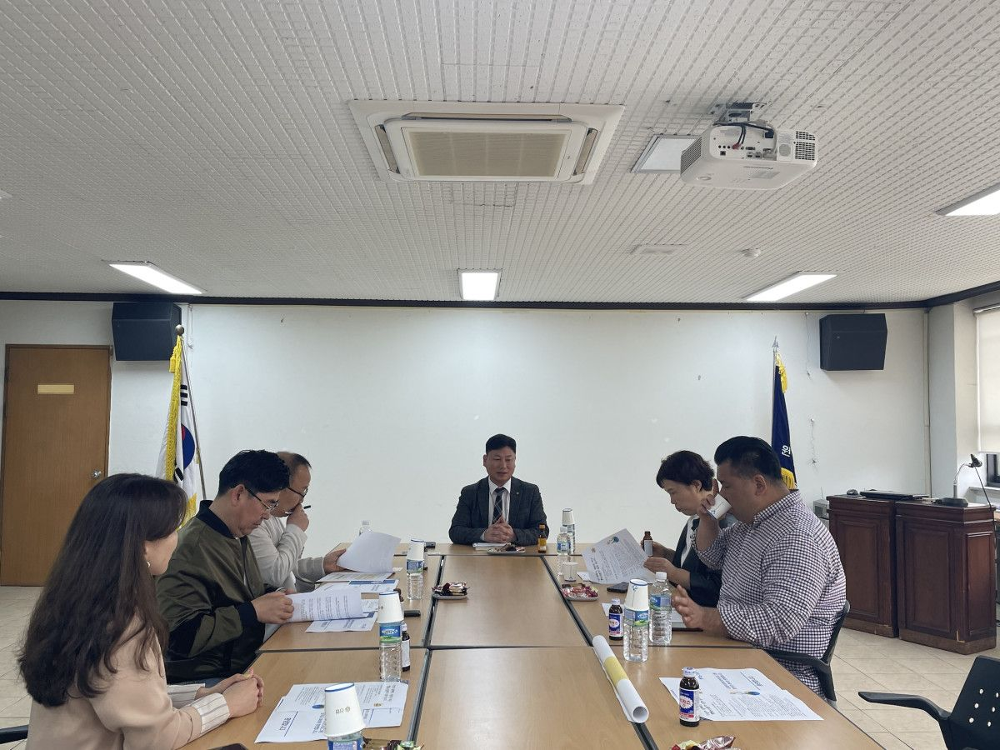
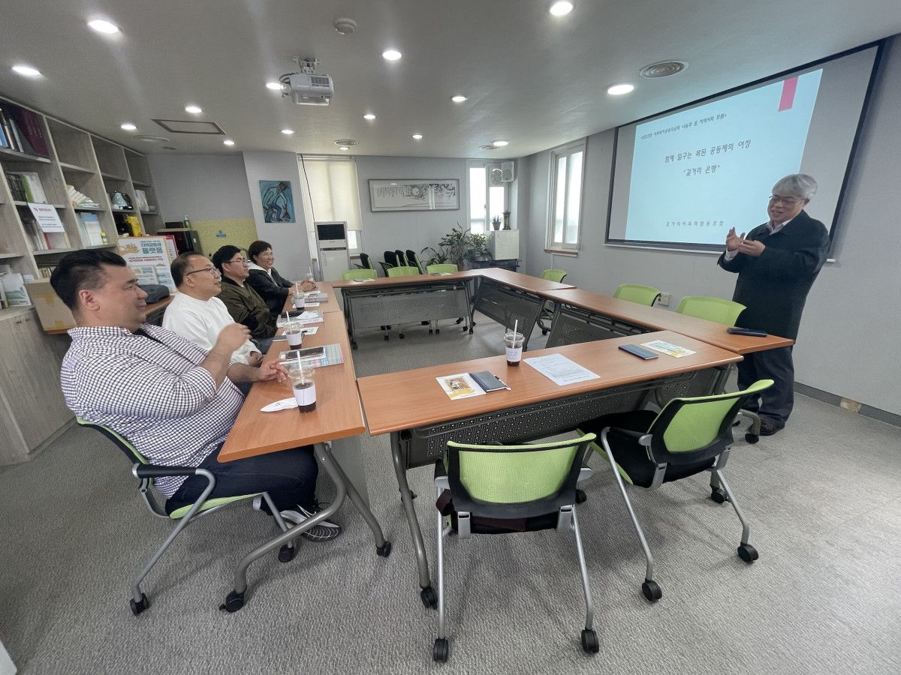
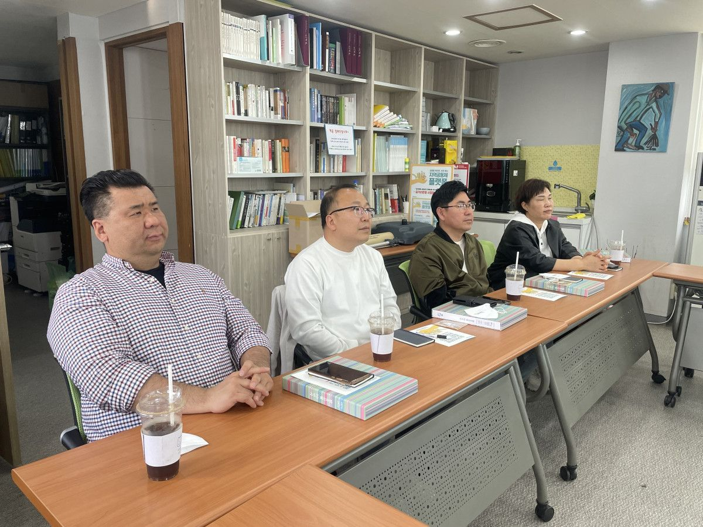

원주협동사회경제네트워크에서는 원주지역 사회적경제 탐방프로그램을 운영하고 있습니다.
원주지역 사회적경제 조직에 방문해 사회적경제 조직들이 추구하는 사회적 가치, 가치 실현을 위한 요즘의 활동을 들어볼 수 있습니다. 탐방과 더불어 원주 여행도 즐기고, 재미있는 체험도 가능합니다.
4월 21일에는 인천 부개1동 주민자치위와 함께했는데요. 사회적금융에 관심이 많았던 부개1동 주민자치위와 함께했던 「원주 사회적경제 탐방프로그램」 코스를 소개합니다.
-
❶ 원주 협동조합의 역사와 원주협동사회경제네트워크
❷ 지역에서 다양한 사회공헌사업을 펼치며, 조합원 상호간의 친목을 도모하고 공동체를 모색하는 원주밝음신협
❸ 취약계층 가계상담, 사회복지서비스를 제공하는 갈거리사회적협동조합
-
이번 탐방프로그램은 탐방팀의 활동을 고려해 금융을 기반으로 활동하는 조합원 탐방코스를 제안드렸는데요.
이 외에도 사회적가치를 녹여낸 상품 제조업 탐방이나 공동체 활동 탐방, 유통판로 등 다양한 키워드로 탐방코스 기획이 가능합니다. 네트워크에서 운영하는 하루 탐방을 통해 원주 사회적경제를 즐겨보시기 바랍니다.
탐방에 대한 자세한 내용은 원주협동사회경제네트워크 홈페이지에서 확인하실 수 있습니다




